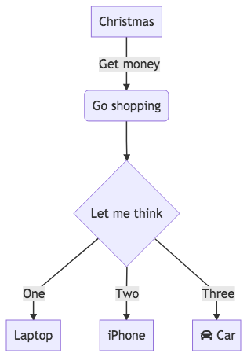

Mermaid is a very useful way of writing a form of Markdown that defines graphs - like this:
graph TD
A[Christmas] -->|Get money| B(Go shopping)
B --> C{Let me think}
C -->|One| D[Laptop]
C -->|Two| E[iPhone]
C -->|Three| F[fa:fa-car Car]
After you run a document with the above through Mermaid, you'll get an image like this:

Being able to draw simple diagrams like this is clearly very useful when documenting software
systems and data flows. I often use Sphinx when writing
docs and it comes with a Makefile so that you can simply make docs to take your Markdown or
reStructured Text and convert it into other formats for sharing.
I thought it would be nice to combine the two - have a make command which could (re)create
images from the Mermaid files. Here's what I have:
# Minimal makefile for Sphinx documentation
# You can set these variables from the command line.
SPHINXOPTS =
SPHINXBUILD = sphinx-build
SPHINXPROJ = MyProject
SOURCEDIR = .
BUILDDIR = _build
STATICDIR = _static
MERMAID_CLI = /usr/local/bin/mmdc
MERMAID_OPTS = -w 1024 -H 768 -b transparent
MERMAID_OPTS = -b transparent
MERMAID_OUTDIR = $(STATICDIR)/_build/png
MERMAID_SOURCES := $(shell find $(SOURCEDIR) -name '*.mmd')
MERMAID_OBJECTS := $(patsubst $(SOURCEDIR)/%.mmd, $(STATICDIR)/png/%.png, $(SOURCES))
# Put it first so that "make" without argument is like "make help".
help:
@$(SPHINXBUILD) -M help "$(SOURCEDIR)" "$(BUILDDIR)" $(SPHINXOPTS) $(O)
.PHONY: clean help Makefile mermaid
clean:
@rm -rf $(BUILDDIR)
@rm -rf $(MERMAID_OUTDIR)
# mermaid_cli target. Note that it is installed globally.
$(MERMAID_CLI):
@npm install -g mermaid.cli
# mermaid target to generate PNG files from the MMD files.
mermaid: $(MERMAID_CLI)
@for SOURCE in $(MERMAID_SOURCES); \
do \
TARGET=$$(echo $$SOURCE | \
sed 's|$(SOURCEDIR)|$(MERMAID_OUTDIR)|' | \
sed 's|.mmd|.png|'); \
echo "$$SOURCE -> $$TARGET"; \
mkdir -p $$(dirname $$TARGET); \
$(MERMAID_CLI) $(MERMAID_OPTS) -i $$SOURCE -o $$TARGET; \
done
$(MERMAID_OUTDIR):
@$(shell mkdir -p $(@))
# Catch-all target: route all unknown targets to Sphinx using the new
# "make mode" option. $(O) is meant as a shortcut for $(SPHINXOPTS).
%: Makefile mermaid
@$(SPHINXBUILD) -M $@ "$(SOURCEDIR)" "$(BUILDDIR)" $(SPHINXOPTS) $(O)
@open $(BUILDDIR)/$@/index.html
I'm reasonably sure that there's a better way of doing this, but this one seems simple and it works well for what I currently need.